Ethernet Variable Exchange
This section provides basic information regarding Ethernet Variable Exchange (ETH VE) protocol components.
Ethernet Variable Exchange (ETH VE) is a simple protocol based on TCP/UDP for exchanging data over the Ethernet.
TCP/UDP utilizes the Lightweight IP (lwIP) library provided by Xilinx.
The protocol runs as a bare-metal application with a guaranteed, deterministic execution rate.
Ethernet Variable Exchange is supported by the following Typhoon HIL devices: HIL402, HIL101, HIL404, HIL602+, HIL604, HIL506, and HIL606.
ETH VE Setup
The ETH VE Setup component and dialog window are shown in Table 1.
| Component | Component dialog | Component properties |
|---|---|---|
 ETH VE Setup |
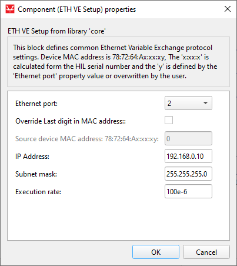 |
|
Component properties are described in Table 2.
| Property name | Description |
|---|---|
| Override last digit in MAC address | Manually specify the last digit of MAC address. |
| Source device MAC address | Modify the MAC address of the device. The MAC address of the HIL device is set to 78:72:64:Ax:xx:xy, where 78:72:64:A refers to Typhoon HIL products, x:xx:x is derived by the device's serial number, and y is defined by the selected port value. If Override HIL device ID is selected, you can manually specify the last digit. Value can be in range from 0 to 15. |
| IP address | The IP address of the HIL device. |
| Subnet mask | Mask for subnet traffic routing. |
| Ethernet port | Ethernet port that will be used for ETH VE communication. |
| Execution rate | Signal processing execution rate. Execution rate must match with the other components used in the model. |
There must be exactly one ETH VE Setup component for each HIL device that uses Ethernet Variable Exchange.
ETH VE Send
The ETH VE Send component is presented in Table 4. This block lets you alter basic settings for the send socket. In this case, the HIL device will be the client in a client-server application.
ETH VE Send represents a client. The client tries to connect to the remote server specified by Destination IP address and Destination Port after the simulation starts. If the server is accessible, an active connection is opened, system variables are packed, and transferred over Ethernet. In case of a remote server failure, the client will continue trying to reconnect.
| Component | Component dialog | Component properties |
|---|---|---|
 ETH VE Send |
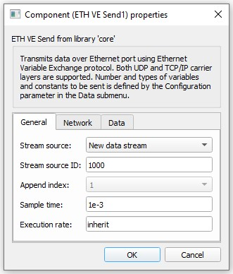 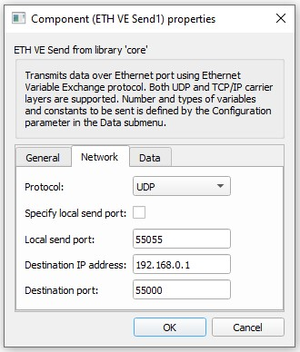 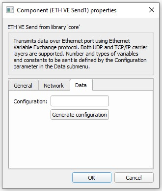 |
|
Component properties are listed in Table 4.
| Property name | Description |
|---|---|
| Stream source | Data from multiple ETH VE Send components can be joined into one message. This property defines if the component creates a new data stream or if it should append data to an existing stream. |
| Stream source ID | Unique ID of the data stream . Value can be in range from 0 to 65534. |
| Append index | This property defines the order of the data that is appended to an existing stream. |
| Sample time | Message sending rate. |
| Execution rate | Signal processing execution rate. Model values are sampled at the Execution rate and they are sent at the Sample time (which may differ). The Execution rate must match with the other components in the model. |
| Protocol | The protocol can be either TCP/IP or UDP. |
| Specify local send port | Option to specify a port from which data will be streamed; default value is false. |
| Local send port | Represents the local port from which data will be streamed, available only if Specify local send port is active. Value can be in range from 0 to 65536. |
| Destination IP address | Destination IP address. |
| Destination port | Remote server port to which data will be streamed. Value can be in range from 0 to 65536. |
| Configuration | Defines the payload of the Send component. For more information on how to configure the payload, check the Configuration parameters section below. |
Configuration parameters
To change the Configuration property, use the Generate configuration button in the Data tab.
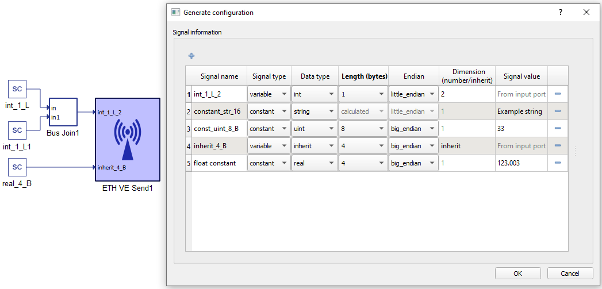
In the configuration menu, a custom payload for the data to be sent over Ethernet can be defined.
Table 5 provides an overview of the Configuration menu.
| Field name | Description |
|---|---|
| Signal name | Unique for the variable/constant. |
| Signal type | Defines if the signal is Variable or Constant. If the signal is Variable, a terminal will be placed on the component where the signal to be sent should be connected. |
| Data type | Variables can have a data type of inherit (depends on the type of input signal), integer, unsigned integer, or real. Constants additionally allow for sending data as a String, which will send the ASCII values of characters from left to right. |
| Length (bytes) | Options for Length are dynamically changed when the Data type is chosen. For example, integer and unsigned integer length could be 1, 2, 4, or 8 bytes. Real data length could be Float (4 bytes) or Double (8 bytes). For Strings, data length is calculated depending on the number of characters. |
| Endian | Select between Little/Big Endian byte order. |
| Dimension (number/inherit) | Number of Variables to be sent of the same Data type and Length. This value dictates the dimension of the input terminal. For constants, this value is always 1. |
| Signal value | For Constants, this defines the value that is going to be sent. |
ETH VE Receive
The ETH VE Receive component is presented in Table 6. This component enables you to perform basic settings for the receive socket. For ETH VE Receive, the HIL device will represent a server in a client-server application. A model can have more than one ETH VE Receive component, provided there is a different receive port for each one.
ETH VE Receive represents a server with a passive opened connection. It waits for any client to try to connect. The server can be configured to accept an incoming connection from any client IP and port (deactivated Specify source port and Specify source IP address respectively), or to accept only from a specified IP and a specified Port. After the connection has been accepted, the server starts receiving packets, parses them, and dispatches data to the target component.
| Component | Component dialog | Component properties |
|---|---|---|
 ETH VE Receive |
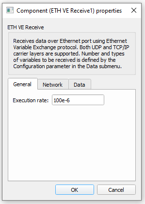 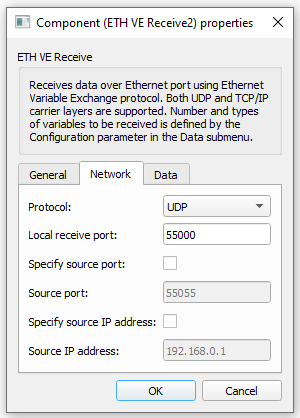 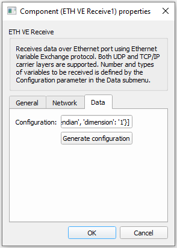 |
|
Component properties are listed in Table 7.
| Property name | Description |
|---|---|
| Protocol | The protocol can be either TCP/IP or UDP. |
| Local receive port | Specify the server receive port. Value can be in range from 0 to 65536. |
| Specify source port | Enable this option to accept only incoming connections from a client with the specified send port. Due to limitations of the TCP/IP stack, we strongly advise against using this option (e.g. if a client that runs on an OS binds to a specified port and closes the connection, each consecutive connection with the same port will have to wait a certain OS-specified amount of time for the port to be released by the OS). |
| Source port | Source port value. Available only if the Specify source port property is active. Value can be in range from 0 to 65536. |
| Specify source IP address | Enable this option to accept incoming connections only from the client with the specified IP. |
| Source IP address | Client IP address. Available only if Specify remote IP is active. |
| Execution rate | Refresh rate of the outputs. |
| Configuration | Defines the payload of the Send component. For more information on how to configure the payload check the Configuration parameters section below. |
Configuration parameters
To change Configuration properties, use the Generate configuration button in the Data sub menu.
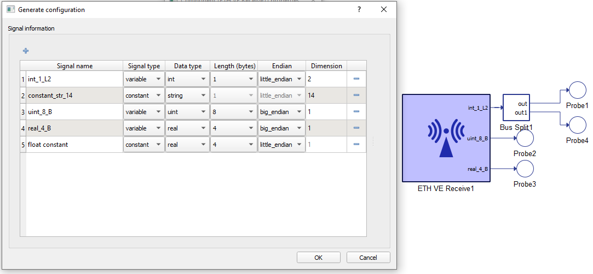
In the configuration menu, a custom payload for the data received over the Ethernet can be defined.
Table 8 provides an overview of the Configuration menu options.
| Field name | Description |
|---|---|
| Signal name | Unique for the variable/constant. |
| Signal type | Defines if the signal is Variable or Constant. If the signal is Variable, a terminal will be placed on the component where the signal to be received should be connected. |
| Data type | Variables may have integer, unsigned integer, or real data types. Constants are just used to skip a certain number of bytes in the payload. |
| Length (bytes) | Options for Length are dynamically changed when the Data type is chosen. For example, integer and unsigned integer length could be 1, 2, 4, or 8 bytes. Real data can be Float (4 bytes) or Double (8 bytes). |
| Endian | Select between Little/Big Endian byte order. |
| Dimension (number/inherit) | Number of Variables to be received of the same Data type and Length. This value dictates the dimension of output terminal. For constants, the dimension is always 1. For Strings, dimension represents the number of bytes to be skipped when parsing the message. |
Connection Establishment
To establish a connection, TCP uses a three-way handshake. Before a client attempts to connect with a server, the server must first bind to a port and listen for incoming connections - this is called a passive open. Once the passive open is established, a client may initiate an active open. To establish a connection, this three-way (or 3-step) handshake occurs in the following order:
- SYN: An active open is performed by the client sending a SYN to the server. The client sets the segment's sequence number to a random value A.
- SYN-ACK: In response, the server replies with a SYN-ACK. The acknowledgment number is set to one more than the received sequence number i.e. A+1. The sequence number that the server chooses for the packet is another random number, B.
- ACK: Finally, the client sends an ACK back to the server. The sequence number is set to the received acknowledgement value i.e. A+1, and the acknowledgement number is set to one more than the received sequence number i.e. B+1.
At this point, both the client and server have received an acknowledgment of the connection. Step 1 establishes the connection parameter (sequence number) for one direction, and Step 2 acknowleges this. Step 2 also establishes the connection parameter (sequence number) for the other direction, and Step 3 acknowledges this. This way, a full-duplex communication is established (Transmission Control Protocol).
Ethernet packet
The size of payload data depends on the size of the input signal of ETH VE Send component. The structure of the ETH VE payload data is shown in Figure 1.
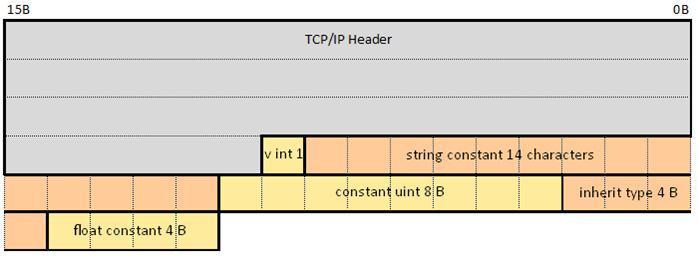
| Protocol | Max packet size | Header size |
|---|---|---|
| TCP/IP | up to 1500 B | 54 B (Ethernet, IPv4, TCP header) |
| UDP | up to 1500 B | 42 B (Ethernet, IPv4, UDP header) |
Network setup
To establish communication between a HIL device and a PC, the following must be satisfied:
- The IP addresses of the HIL device and PC applications setup should be on the same subnet (for example 192.168.2.xxx)
- The Ethernet Access point (Network Interface, NIC, LAN card) should be setup
to use the same subnet addressing:
- Open Network and Sharing Center (Figure 2).
- Click on desired network point (Ethernet 3 like in Figure 3).
- Click on Properties
- Click on Internet Protocol Version 4 (TCP/ipv4), and then properties
- Set IP address (192.168.2.100 like in Figure 3). It is important that the subnet is the same as the subnet configured in the ETH VE component
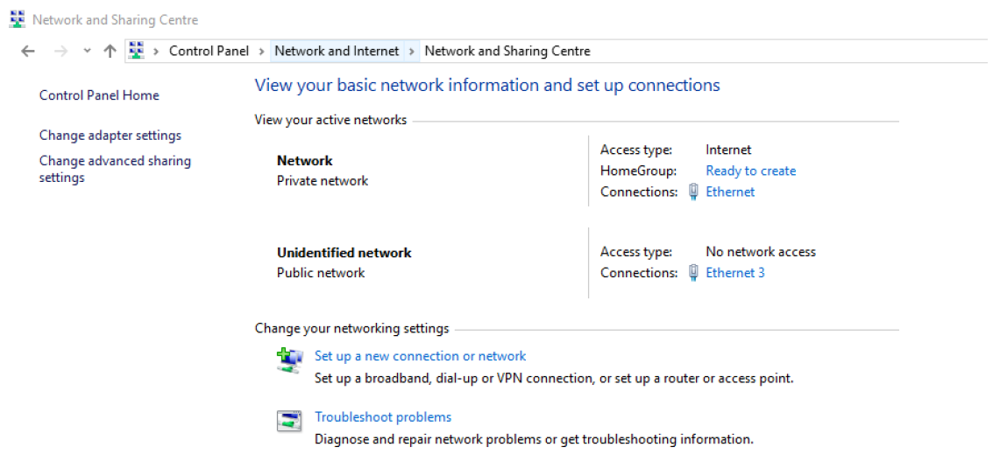
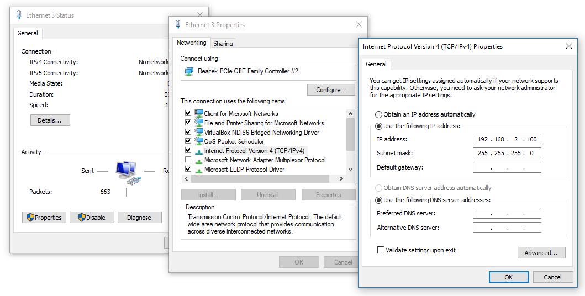
Virtual HIL support
Virtual HIL currently does not support this protocol. When using a non-real-time environment (e.g. when running the model on a local computer), inputs to this component will be discarded and outputs from this component will be zeroed.